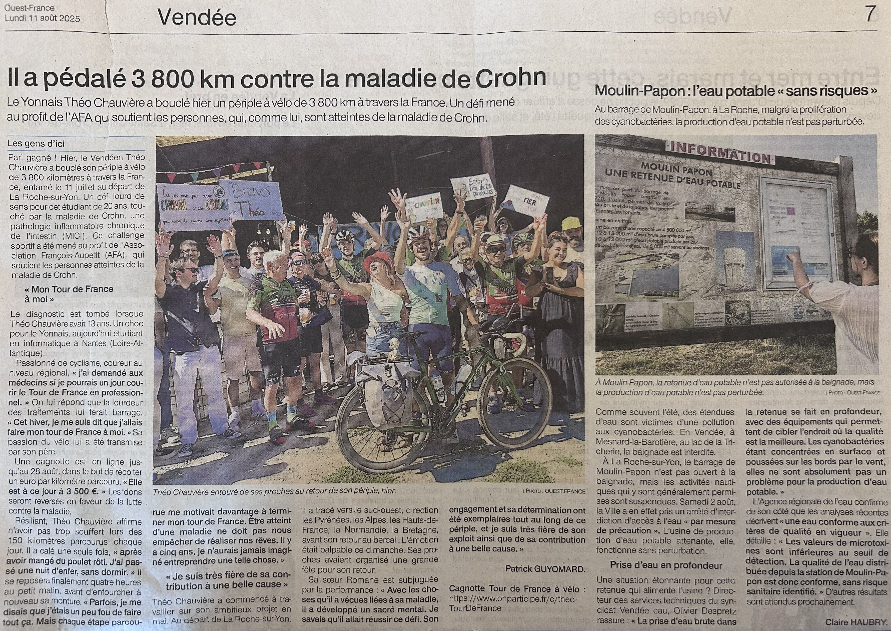
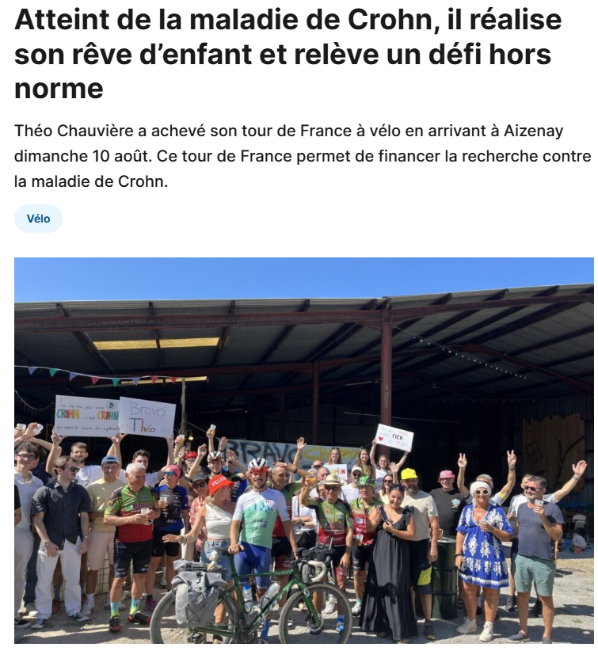
Liens vers PaysYonnais Arrivée
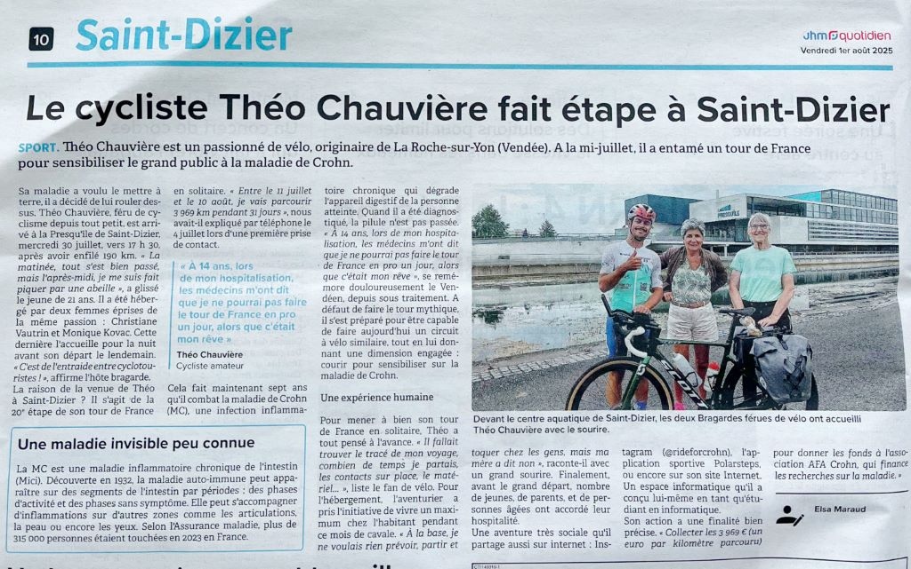
Article Saint-Dizier
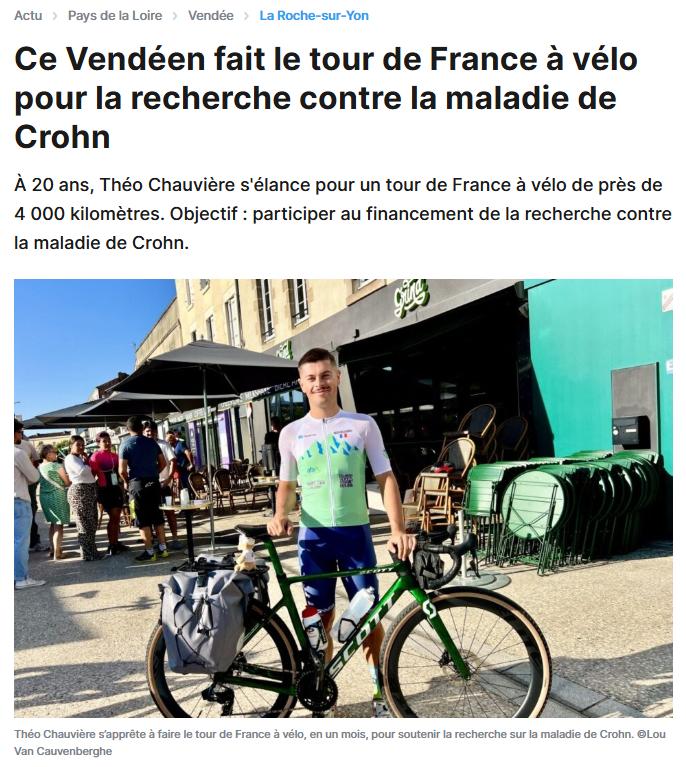
Article sur mon départ
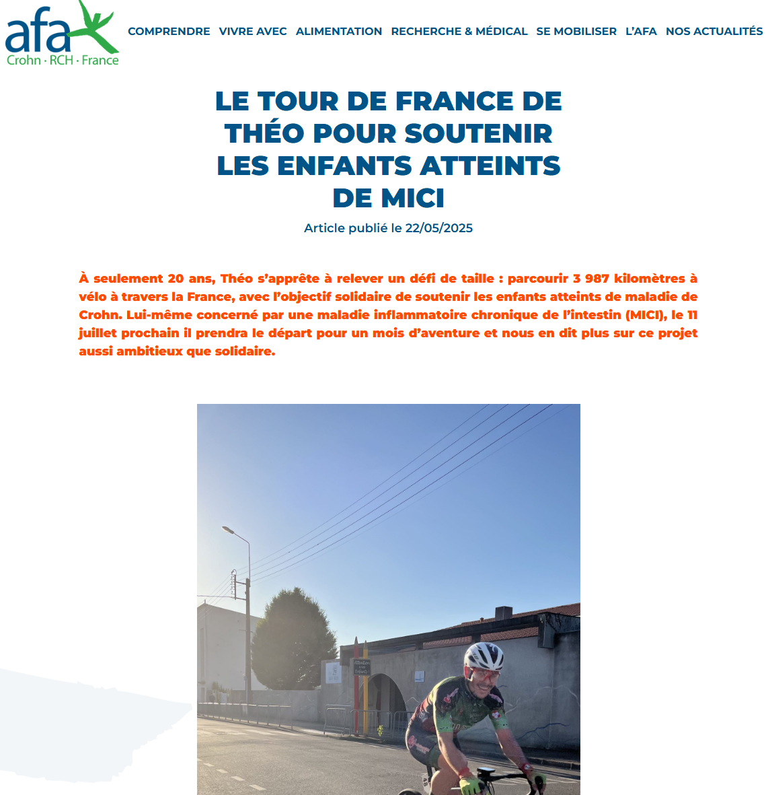
Liens vers L'article AFA
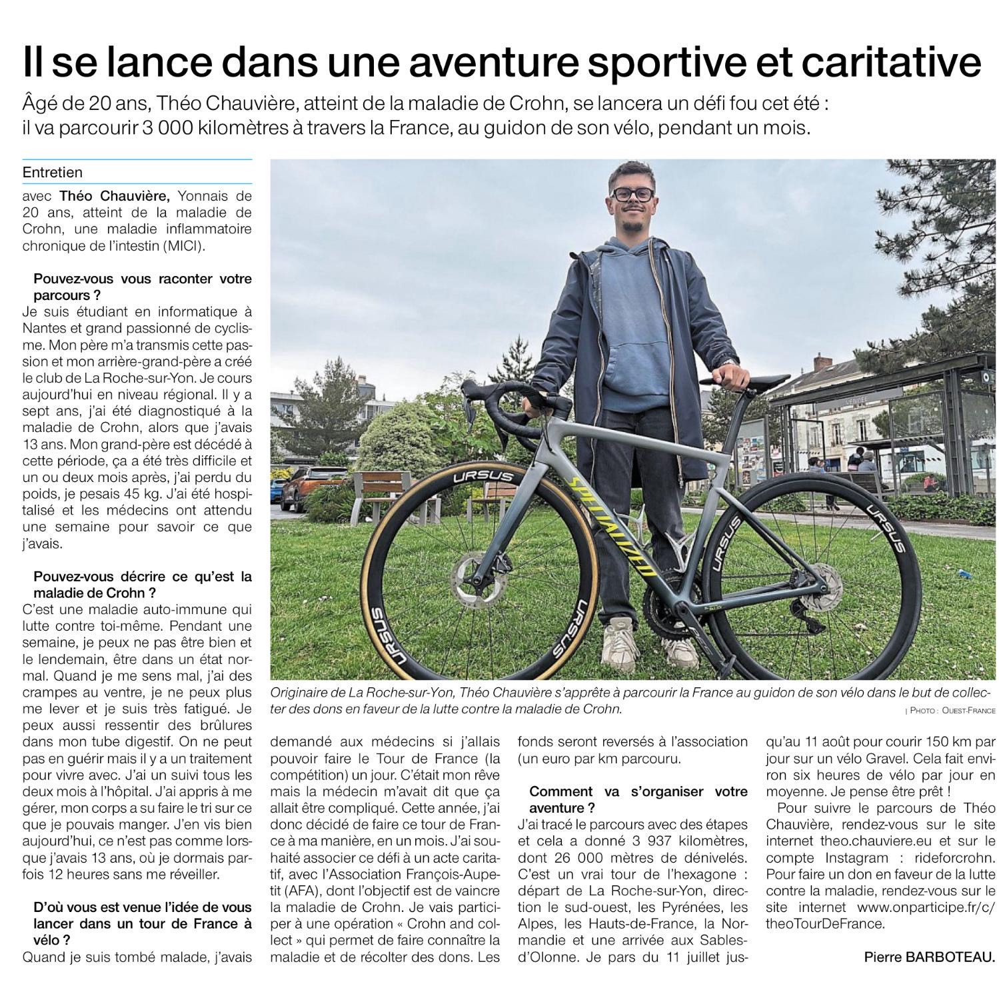
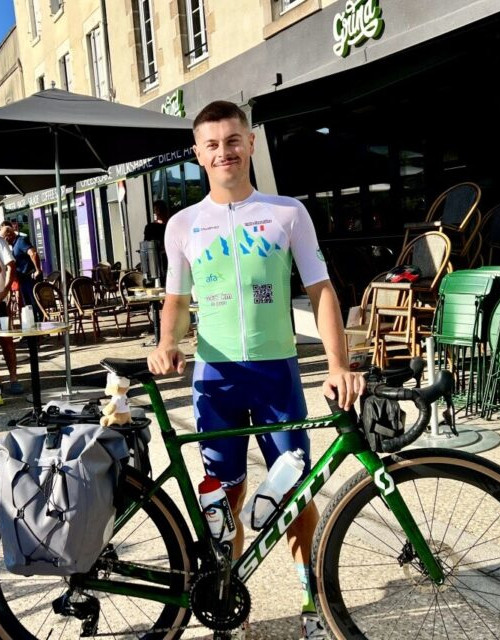
Par Théo Chauvière
Compteur des dons
3660€ / 3969€Pour 3969 km
1 euro par km parcouru


Liens vers PaysYonnais Arrivée

Article Saint-Dizier

Article sur mon départ

Liens vers L'article AFA

Passionné de vélo et d'informatique
Atteint de la maladie de Crohn à 13 ans
Je suis un battant et un releveur de défis
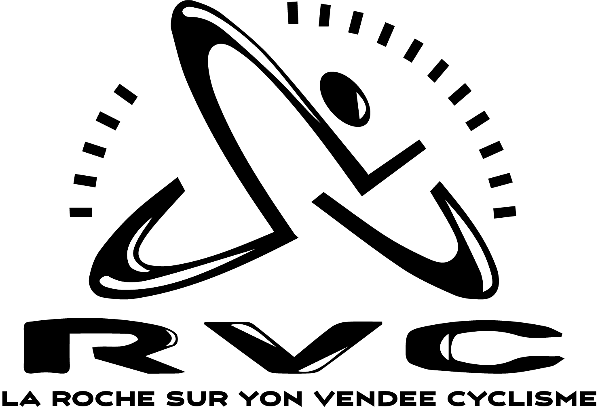
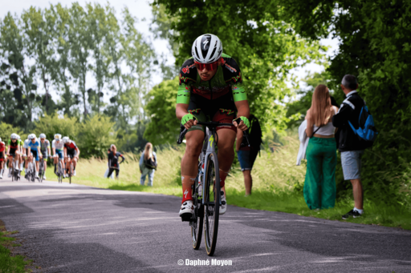
3969 km
28 407 m de Dénivelé
1 mois en autonomie
Du 11 juillet au 10 août
5 à 10 h de vélo par jour
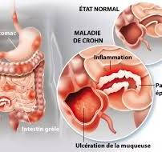
Ma maladie de Crohn provoque des inflammations dans mon intestin, causant des douleurs au ventre et de la diarrhée. Mes symptômes vont et viennent. On ne sait pas exactement d'où elle vient, mais mon traitement est là pour m'aider à me sentir mieux. Avec ce soutien, je peux vivre comme une personne normale et me donner des défis comme celui-là.
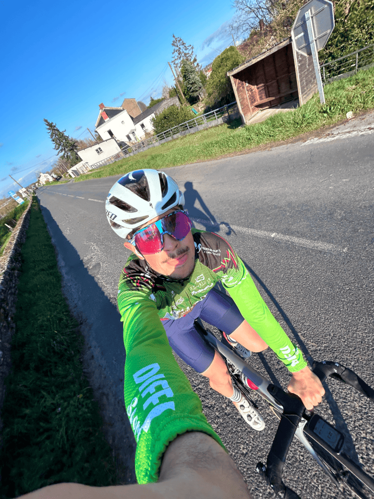
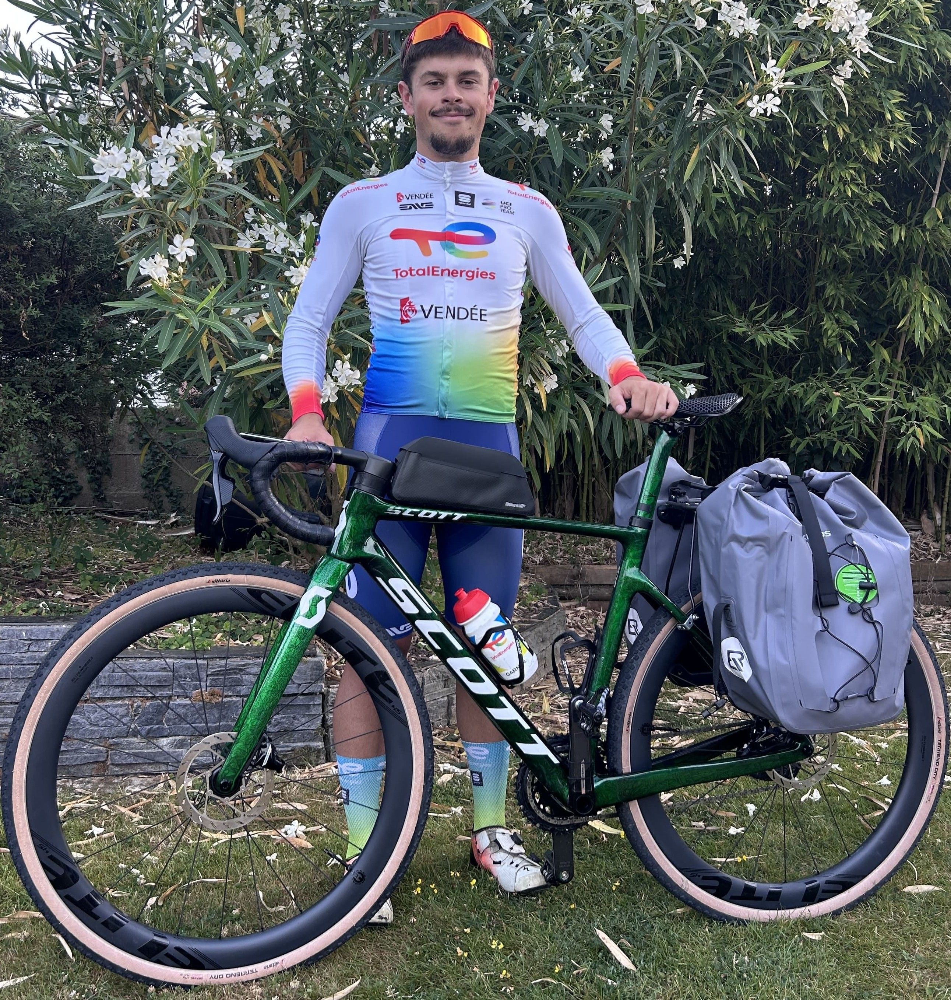
Je vais réaliser ce Tour de France en gravel,
équipé de sacoches pour être autonome et
transporter toutes mes affaires.
Voici le lien de la cagnotte.
Mon objectif est de récolter 1 euro par kilomètre parcouru, soit un total de 3937 euros.
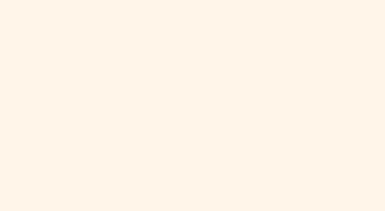
📧 theochauv.tourdefrance@gmail.com
📱 Insta : @rideforcrohn
🚴 Strava : Mon profil